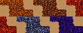

ANTHIVE – geschichteter Boden mit verzweigtem Tunnel
Grafikvorschau mit bestehenden Bodentexturen, geraden Wandkanten und den ergänzten Eckkacheln. Die rechte Abzweigung verläuft durch mehrere Schichten. Dies ist eine isolierte Grafikprüfung, keine Änderung der Spielwelt.
Oberboden
Kompakte Erde
Lehm
Steinschicht
Tiefengestein
Tunnel

Eckkachel-Atlas (5 Materialien × 2 Eckformen)
Jede Zelle ist 24 × 24 Pixel. Durch Spiegelung und Drehung können die Eckformen in andere Richtungen verwendet werden.
